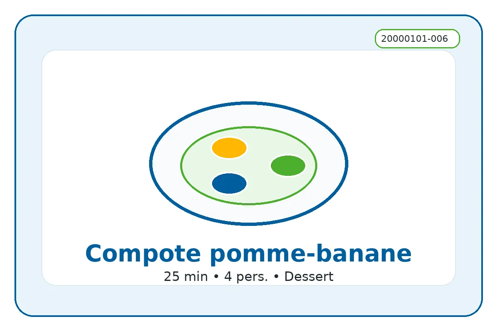

ID recette : 20000101-006
Compote pomme-banane
Une compote pomme-banane douce, rapide et anti-gaspi, idéale pour utiliser des fruits mûrs ou un peu abîmés.
La banane apporte une texture fondante et sucre naturellement la compote. Les pommes assurent l’équilibre et la tenue. Le mixage est facultatif selon l’âge des convives et la texture souhaitée.

🧭 Repères alimentaires
Repères indicatifs à vérifier selon les marques, les remplacements d’ingrédients et les produits réellement utilisés.
🔥 Cuisson indicative
Casserole : 15 à 20 min à feu doux, avec un petit fond d’eau.
Ces valeurs sont indicatives : ajuster selon le four, l’épaisseur du plat et la coloration souhaitée.
⚖️ Adapter les quantités
Le calcul adapte les quantités proportionnellement. Les valeurs nutritionnelles restent calculées sur les quantités de base.
🧺 Ingrédients avec quantités
Principaux
- 600 g — pommes
- 2 pièces — bananes mûres
Secondaires
- 100 ml — eau
- 1 c. à soupe — jus de citron
Optionnels
- 1 pincée — cannelle
- 20 g — sucre ou miel
- 1 pincée — vanille
👩🍳 Préparation détaillée
- Éplucher les pommes si nécessaire, retirer le cœur et couper en petits morceaux.
- Éplucher les bananes mûres et les couper en rondelles.
- Mettre les fruits dans une casserole avec un petit fond d’eau, puis couvrir.
- Cuire 15 à 25 minutes à feu doux, jusqu’à ce que les pommes soient tendres.
- Écraser à la fourchette pour une compote rustique ou mixer pour une texture lisse. Laisser tiédir.
💡 Astuce anti-gaspi
Plus les bananes sont mûres, moins il est nécessaire d’ajouter du sucre. Les pommes légèrement fripées conviennent très bien après avoir retiré les parties abîmées.
🔁 Variantes possibles
Ajouter cannelle, vanille, miel, jus de citron, poire ou quelques raisins secs. Pour un dessert plus gourmand, servir avec riz au lait, fromage blanc ou copeaux de chocolat.
🔎 Rechercher cette recette sur Google
🔗 Sources d’inspiration
Liens utilisés pour comparer les techniques, les variantes et les temps de préparation. La fiche reste reformulée et adaptée au projet.
📊 Valeurs nutritionnelles estimées
Estimation indicative. Les valeurs ci-dessous sont calculées à partir d’ingrédients génériques et des quantités de base. Elles ne remplacent pas les étiquettes des produits, ni un avis médical ou diététique. Voir l’explication complète.
Non officiel
| Valeur | Par portion | Pour 100 g |
|---|---|---|
| Énergie | 660 kJ / 157.8 kcal | 270 kJ / 64.6 kcal |
| Protéines | 1.1 g | 0.5 g |
| Glucides | 35.2 g | 14.4 g |
| dont sucres | 27.3 g | 11.2 g |
| Lipides | 0.5 g | 0.2 g |
| dont acides gras saturés | 0.1 g | g |
| Fibres | 5.2 g | 2.1 g |
| Sel | g | g |
Portion estimée : 244 g. Score simplifié : -5. Indicateur estimé non officiel. Il ne correspond pas à un calcul réglementaire ni à un Nutri-Score officiel.
⚠️ Allergènes et conservation
Allergènes : À vérifier selon les produits utilisés
Conservation : À conserver 24 h au réfrigérateur dans une boîte fermée.
Réchauffage : À réchauffer doucement si nécessaire.
Vérifiez toujours les étiquettes des produits utilisés.
🔎 Filtres associés
Cliquez sur un bouton pour trouver les recettes associées au même champ.
Sous-catégorie : Compote
Moment du repas : Dessert Gouter
Équipement : Casserole
Repères alimentaires : Sans porc Végétalien Végétarien Sans gluten possible Sans lactose possible
📱 QR code
QR code vers la fiche en ligne.
https://recettesducoeur.github.io/recettes/20000101-006.html
Sur mobile/tablette, seul le téléchargement PDF est proposé. Sur PC, l’impression conserve les quantités sélectionnées.